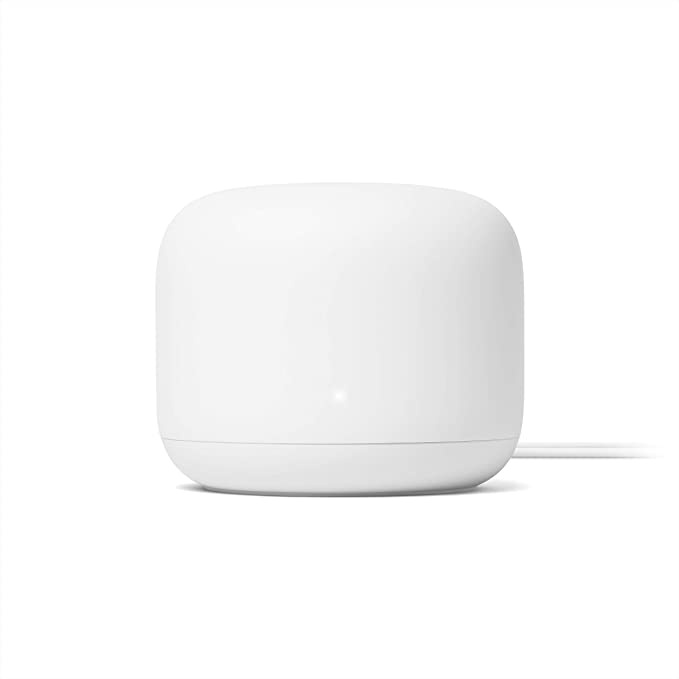

3 reasons of low-quality Internet connection

Reason 1: Slow computer or phone
Quite often the issues with Internet connection are caused by using a very old computer that cannot handle even basic tasks. The older the computer – the older are the hardware and the OS. Modern websites and software rely on the latest features available in browsers and software. If the computer is too old, it may not be able to handle the load your perception of the Internet speed will be that it's dramatically slow, however, the actual speed may be fine and it's just the computer which causes everything to last forever. Also, if your PC is a decent machine, check it for viruses and malware.
Common issues
- Delayed response of the interface in general
- Frequent system error messages
- Insufficient memory with system hangs or restarts
- Video freezes
- Everything takes forever
What to do?
- ⭐️ Buy a new computer. It will be faster, with newer version of OS, software and hardware
- Clean it up from garbage and viruses. Google the tutorials or go to a computer repair shop for assistance
Reason 2: Low quality or old router
Apart from a modern computer, your router should not be a $15 box of microchips. A lot of issues with Wi-Fi are either related to the low performance of the router's wireless subsystem in crowded areas or the weak signal strength. By crowded I mean when there are multiple routers nearby that interfere with the signal of your own router. You'd want to have a modern router that at least supports Wi-Fi 5. If you're not tech savvy, just pick a decent $100-$150 TP-Link or Asus.
Common issues
- Wi-Fi disconnects periodically
- Wi-Fi connection quality becomes worse over time
- Wi-Fi speed is very low even in a close proximity to the router
- Downloads interruption
- The OS says the Wi-Fi connection isn't secure
What to do?
- ⭐️ Buy a new router
- Upgrade router's firmware
- Reposition router
- Adjust Wi-Fi settings such as Wi-Fi channel
- Restart router frequently
Top 5 router options to buy in 2023
*Click on the links below to check out the actual prices
 ASUS AX5700 Wi-Fi 6 Gaming Router (RT-AX86U) – $249.99
ASUS AX5700 Wi-Fi 6 Gaming Router (RT-AX86U) – $249.99 TP-Link AX5400 Wi-Fi 6 Router (Archer AX73) – $154.99
TP-Link AX5400 Wi-Fi 6 Router (Archer AX73) – $154.99 TP-Link AX1800 Wi-Fi 6 Router – $79.99
TP-Link AX1800 Wi-Fi 6 Router – $79.99- Google Nest Wi-Fi Router – $74.99
 TP-Link AX1500 Wi-Fi 6 Router – $66.98
TP-Link AX1500 Wi-Fi 6 Router – $66.98
Reason 3: ISP (Internet Service Provider) issue
The hardest to troubleshoot and the most annoying one. But before you upgrade all of your hardware determine the side that has the problem – ISP or your own network or computer. Check if there are connection dropouts using Internet Connection Monitor.
Common issues
- Intermittent connection issues
- Unstable connection speed
- Video freezes
- Web pages load interruption
- File downloads interruption
- High ping and packet loss in games
What to do?
- ⭐️ Use Internet Connection Monitor (ICM) or similar software on your laptop close to the router to diagnose the connection drops and ensure it's actually an ISP issue
- ⭐️ Ask your provider support crew to help with the connection stability, providing them a log of disconnects that can be logged by Internet Connection Monitor (ICM). It might be a waste of time, since the support may just suggest you some crappy advice like rebooting your computer or something similar – be ready to dedicate some time for interacting with their crew
- Change your ISP. You may just pick a more stable service provider and fix the issues
Watch the video overview
Several useful articles that may help you fix the Internet connection problems

© Dmytro Shcherbyna 2014-2023